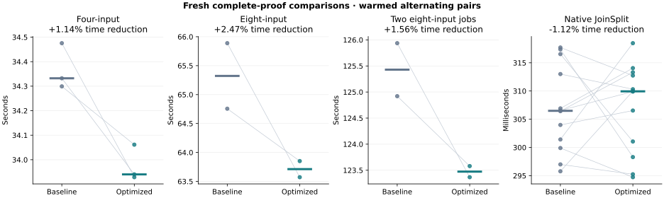
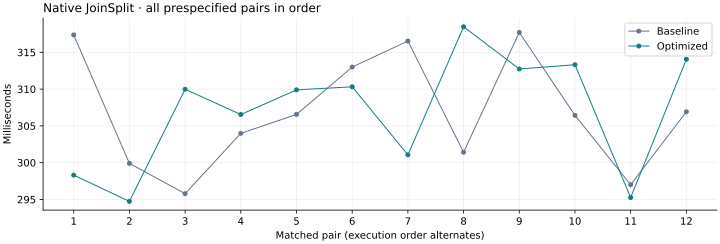

20 October 2026 · Fifth optimization pass · Tesla V100-PCIE-32GB
This run compares the previous external_brev release with internal_inverse.
Both use fresh proofs, the same fixtures and the same independent CPU verifier binaries.
Earlier campaign evidence remains intact.
All seven aggregation pairs improved: median latency fell 1.14% for four inputs, 2.47% for eight inputs and 1.56% for two concurrent eight-input jobs. Native results were mixed: its pooled median was 1.12% slower, with six wins in twelve pairs and a median paired reduction of -0.13%. This run establishes no native speedup. The candidate is retained for its consistent aggregation gains on the tested V100 fixtures.
Values are seconds. Positive reductions indicate lower latency. The pooled-median ratio and median within-pair reduction answer different questions; both are retained along with every raw sample.
| Workload | Baseline median | Optimized median | Pooled reduction | Median paired reduction | Paired wins |
|---|---|---|---|---|---|
| Four-input aggregation | 34.332247 | 33.940245 | +1.14% | +1.14% | 3/3 |
| Eight-input aggregation | 65.322456 | 63.712023 | +2.47% | +2.46% | 2/2 |
| Two concurrent eight-input jobs | 125.428711 | 123.472854 | +1.56% | +1.56% | 2/2 |
| Native JoinSplit | 0.306494 | 0.309939 | -1.12% | -0.13% | 6/12 |

The native sequence is shown separately to make shifts and variability visible.

The fast Poseidon2 internal layer now combines the diagonal with unreduced low/high 32-bit state sums and reduces once per output. Negative coefficients add an integer multiple of the field modulus before subtraction. All limb accumulators stay nonnegative and below 12 × 2³², inside the shared matrix reducer's 21 × (2³² − 1) bound. The existing diagonal-parameter guard and generic fallback remain in place.
Goldilocks inversion now uses a fixed public addition chain: 63 squares and nine other multiplications. Its exponent is exactly p − 2, including the previous zero-to-zero behavior for zero field representatives. All constant p − 2 exponentiations in the OpenCL engine use this helper.
The quotient kernel shares one inversion of z × (x − 1) × (x − trace_last) across its three denominators. Seven multiplications recover inverse_z and the first/last selectors. The existing nonzero-domain guard runs first, and its rejection sentinel is unchanged. No cross-thread synchronization or additional buffers are needed.
src/gpu.rssrc/gpu/arithmetic_tests.rssrc/block_v2/gpu_hash/engine/quotient_kernels.clsrc/block_v2/gpu_hash/engine/device/compiler_constants.rssrc/block_v2/gpu_hash/engine/device/compiler_folding.rssrc/block_v2/gpu_hash/engine/device/evaluations.rssrc/block_v2/gpu_hash/engine/device/htlc_kernels.rssrc/block_v2/gpu_hash/engine/device/lookup_kernels.rssrc/block_v2/gpu_hash/engine/device/opening_kernels.rssrc/block_v2/gpu_hash/engine/device/opening_quadratic_kernels.rssrc/block_v2/gpu_hash/engine/device/quotient_commit.rssrc/block_v2/gpu_hash/engine/device/trace_commit.rssrc/block_v2/gpu_hash/engine/device/transform.rssrc/block_v2/gpu_hash/engine/device/witness_kernels.rsProof parameters, round constants, randomness, proof encoding, verifier behavior, NTT scheduling, resource admission and the 250 W power cap remain the same. The Metal implementation is separate.
These are summed kernel-event durations, which can overlap and must not be added to obtain end-to-end latency. The row-hash kernel reports zero private bytes for both builds. No profile events were dropped.
| Workload | Kernel | Baseline seconds | Optimized seconds | Reduction |
|---|---|---|---|---|
| Four-input aggregation | lde_absorb | 6.695487 | 6.315581 | +5.67% |
| Four-input aggregation | lde_ntt | 6.058396 | 6.059158 | -0.01% |
| Four-input aggregation | device_extension_quotient | 3.014182 | 3.011695 | +0.08% |
| Native JoinSplit | lde_absorb | 0.019153 | 0.018210 | +4.92% |
| Native JoinSplit | lde_ntt | 0.012199 | 0.012198 | +0.01% |
| Native JoinSplit | device_extension_quotient | 0.001587 | 0.001664 | -4.84% |
Values are GiB, taking the highest sampled peak across the qualification runs. The original host, device-allocation and whole-device admission budgets remain in force.
| Workload | Baseline GPU | Optimized GPU | Baseline host RSS | Optimized host RSS |
|---|---|---|---|---|
| Eight-input aggregation | 8.543 | 8.512 | 1.235 | 1.231 |
| Two concurrent eight-input jobs | 17.918 | 17.020 | 2.454 | 2.463 |
42 targeted tests passed, plus CPU-only and GPU-without-tuning compilation. New integer oracles cover the inverse chain over arbitrary u64 inputs and both extension degrees of the actual quotient kernel, including invalid domains, noncanonical inputs, output offsets and padded launches. The permanent internal-matrix oracle now covers 66,836 states for each guarded/default/custom diagonal path. Isolated screens also check complete permutations.
The benchmark ledger contains 60 independently CPU-audited outputs representing 192 fresh benchmark proofs. Output hashes are unique, every required GPU stage is covered, and native public-input tampering is rejected. All 690 selected source-file hashes match release and test builds.
| Targeted check | Passed |
|---|---|
| scalar-absorb-oracle | 1 |
| parameter-guard | 1 |
| tuning-policy | 3 |
| witness-host | 6 |
| witness-budget | 1 |
| ntt-local-memory | 5 |
| ntt-and-tuning-gpu-oracles | 4 |
| arithmetic-oracles | 8 |
| dft-and-commitment-oracles | 6 |
| witness-parity-reference | 2 |
| witness-parity-fusion | 2 |
| witness-rejection | 2 |
| native-wallet-entrypoints | 1 |
Machine-readable evidence and all measurements · Incremental source patch · Source, controllers and raw evidence archive